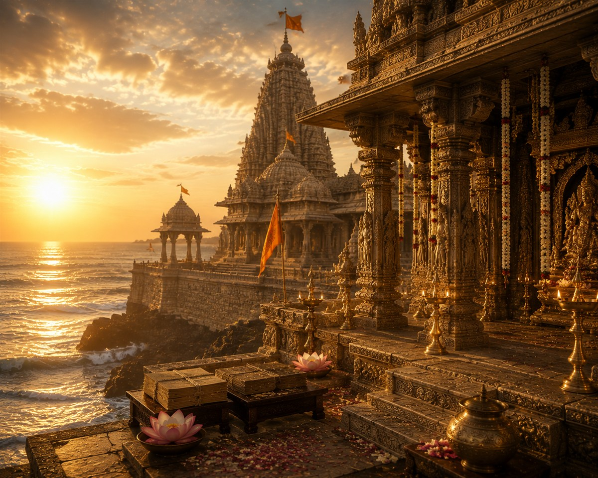

గుజరాత్ రాష్ట్రంలోని పవిత్ర ద్వారకా నగరంలో అరేబియా సముద్ర తీరాన వెలసిన శ్రీ ద్వారకా శారదా పీఠం ఆదిశంకర భగవత్పాదులు స్థాపించిన నాలుగు ఆమ్నాయ పీఠాలలో పశ్చిమామ్నాయ పీఠంగా ప్రసిద్ధి చెందింది.
శ్రీకృష్ణ పరమాత్మ పాలించిన ద్వారకా నగరంలో స్థాపించబడిన ఈ పీఠం అద్వైత వేదాంత ప్రచారం, వేద సంరక్షణ మరియు సనాతన ధర్మ పరిరక్షణలో శతాబ్దాలుగా విశిష్ట సేవలు అందిస్తోంది.
శ్రీ ద్వారకా శారదా పీఠం
భారతీయ సనాతన ధర్మ పుణ్యక్షేత్రం

౧. పరిచయం
౨. పీఠ మహిమ
ద్వారకా శారదా పీఠం పశ్చిమ భారతదేశానికి ఆధ్యాత్మిక మార్గదర్శక కేంద్రంగా నిలిచింది.
ఈ పీఠంలో శారదాదేవిని, జగద్గురువులను దర్శించడం వల్ల జ్ఞానం, వివేకం, ఆధ్యాత్మిక చైతన్యం మరియు దైవానుగ్రహం లభిస్తాయని భక్తుల విశ్వాసం.
ఈ పీఠంలో శారదాదేవిని, జగద్గురువులను దర్శించడం వల్ల జ్ఞానం, వివేకం, ఆధ్యాత్మిక చైతన్యం మరియు దైవానుగ్రహం లభిస్తాయని భక్తుల విశ్వాసం.
౩. పీఠ స్థాపన – పురాణ నేపథ్యం
భారతదేశమంతటా ధర్మప్రచారం చేసిన ఆదిశంకర భగవత్పాదులు దేశంలోని నాలుగు దిక్కులలో నాలుగు ఆమ్నాయ పీఠాలను స్థాపించారు.
పశ్చిమ దిశలో శ్రీకృష్ణుని పుణ్యభూమియైన ద్వారకాను ఎంపిక చేసి ఇక్కడ శ్రీ ద్వారకా శారదా పీఠాన్ని స్థాపించారు.
ఈ పీఠానికి మొదటి పీఠాధిపతిగా తన ప్రధాన శిష్యులలో ఒకరైన హస్తామలకాచార్యులను నియమించినట్లు సంప్రదాయం తెలియజేస్తుంది.
పశ్చిమ దిశలో శ్రీకృష్ణుని పుణ్యభూమియైన ద్వారకాను ఎంపిక చేసి ఇక్కడ శ్రీ ద్వారకా శారదా పీఠాన్ని స్థాపించారు.
ఈ పీఠానికి మొదటి పీఠాధిపతిగా తన ప్రధాన శిష్యులలో ఒకరైన హస్తామలకాచార్యులను నియమించినట్లు సంప్రదాయం తెలియజేస్తుంది.
౪. చరిత్ర
శ్రీ ద్వారకా శారదా పీఠం క్రీస్తుశకం ఎనిమిదవ శతాబ్దంలో స్థాపించబడింది.
అనేక రాజవంశాల ఆదరణతో ఈ పీఠం వేద విద్య, ఉపనిషత్తులు, అద్వైత వేదాంతం మరియు ధార్మిక సంప్రదాయాల అభివృద్ధికి కేంద్రంగా కొనసాగుతోంది.
నేటికీ గురుపరంపర నిరంతరంగా కొనసాగుతూ ప్రపంచవ్యాప్తంగా ఉన్న భక్తులకు ఆధ్యాత్మిక మార్గదర్శకత్వం అందిస్తోంది.
అనేక రాజవంశాల ఆదరణతో ఈ పీఠం వేద విద్య, ఉపనిషత్తులు, అద్వైత వేదాంతం మరియు ధార్మిక సంప్రదాయాల అభివృద్ధికి కేంద్రంగా కొనసాగుతోంది.
నేటికీ గురుపరంపర నిరంతరంగా కొనసాగుతూ ప్రపంచవ్యాప్తంగా ఉన్న భక్తులకు ఆధ్యాత్మిక మార్గదర్శకత్వం అందిస్తోంది.
౫. పీఠ నిర్మాణ విశేషాలు
పీఠం ద్వారకాధీశ ఆలయానికి సమీపంలో ఉంది.
శారదాదేవికి ప్రత్యేక ఆలయం ఉంది.
ప్రాచీన మండపాలు, శిల్పాలు ఆధ్యాత్మిక వైభవాన్ని ప్రతిబింబిస్తాయి.
వేదాధ్యయనం మరియు ధార్మిక కార్యక్రమాలకు ప్రత్యేక ఏర్పాట్లు ఉన్నాయి.
శారదాదేవికి ప్రత్యేక ఆలయం ఉంది.
ప్రాచీన మండపాలు, శిల్పాలు ఆధ్యాత్మిక వైభవాన్ని ప్రతిబింబిస్తాయి.
వేదాధ్యయనం మరియు ధార్మిక కార్యక్రమాలకు ప్రత్యేక ఏర్పాట్లు ఉన్నాయి.
౬. ముఖ్య దర్శనీయ స్థలాలు
శ్రీ శారదాదేవి ఆలయం
జగద్గురువుల పీఠం
ద్వారకాధీశ స్వామి దేవాలయం
గోమతి ఘాట్
రుక్మిణి దేవి ఆలయం
సముద్ర తీరం
జగద్గురువుల పీఠం
ద్వారకాధీశ స్వామి దేవాలయం
గోమతి ఘాట్
రుక్మిణి దేవి ఆలయం
సముద్ర తీరం
౭. నిత్య సేవలు
శ్రీ శారదాదేవి నిత్యపూజ
వేదపారాయణం
గురుపూజ
ధార్మిక ప్రవచనాలు
అన్నదానం
వేదపారాయణం
గురుపూజ
ధార్మిక ప్రవచనాలు
అన్నదానం
౮. ప్రధాన ఉత్సవాలు
శ్రీకృష్ణ జన్మాష్టమి
గురు పూర్ణిమ
శంకర జయంతి
శారదా నవరాత్రి
గురు పూర్ణిమ
శంకర జయంతి
శారదా నవరాత్రి
౯. నేటి ద్వారకా శారదా పీఠం
నేడు ఈ పీఠం వేద సంరక్షణ, సంస్కృత విద్య, ధర్మ ప్రచారం మరియు ఆధ్యాత్మిక సేవా కార్యక్రమాలను నిర్వహిస్తూ భారతదేశంలోని ప్రముఖ ఆధ్యాత్మిక సంస్థలలో ఒకటిగా కొనసాగుతోంది.
౧౦. యాత్రికులకు సమాచారం
స్థానం
ద్వారకా, దేవభూమి ద్వారకా జిల్లా, గుజరాత్.
చేరుకునే మార్గాలు
రైలుమార్గం: ద్వారకా రైల్వే స్టేషన్.
విమాన మార్గం: జామ్నగర్ విమానాశ్రయం.
రోడ్డు మార్గం: గుజరాత్ రాష్ట్రంలోని ప్రధాన నగరాల నుండి సులభ రవాణా సౌకర్యం ఉంది.
ద్వారకా, దేవభూమి ద్వారకా జిల్లా, గుజరాత్.
చేరుకునే మార్గాలు
రైలుమార్గం: ద్వారకా రైల్వే స్టేషన్.
విమాన మార్గం: జామ్నగర్ విమానాశ్రయం.
రోడ్డు మార్గం: గుజరాత్ రాష్ట్రంలోని ప్రధాన నగరాల నుండి సులభ రవాణా సౌకర్యం ఉంది.
౧౧. దర్శనం మరియు సేవల నమోదు
అధికారిక వెబ్సైట్
https://dwarkashardapitham.org
అందుబాటులో ఉన్న సేవలు
దర్శన సమాచారం
పూజల వివరాలు
ధార్మిక కార్యక్రమాల సమాచారం
దాన సేవలు
ప్రచురణల వివరాలు
https://dwarkashardapitham.org
అందుబాటులో ఉన్న సేవలు
దర్శన సమాచారం
పూజల వివరాలు
ధార్మిక కార్యక్రమాల సమాచారం
దాన సేవలు
ప్రచురణల వివరాలు
౧౨. ఆసక్తికర విషయాలు
ఆదిశంకర భగవత్పాదులు స్థాపించిన నాలుగు ఆమ్నాయ పీఠాలలో పశ్చిమామ్నాయ పీఠం.
ఈ పీఠం సామవేదానికి సంబంధించిన ఆమ్నాయ పీఠంగా ప్రసిద్ధి.
మొదటి పీఠాధిపతిగా హస్తామలకాచార్యులను నియమించినట్లు సంప్రదాయం.
ద్వారకాధీశ స్వామి ఆలయానికి సమీపంలో ఈ పీఠం ఉంది.
వేల సంవత్సరాలుగా గురుపరంపర నిరంతరంగా కొనసాగుతోంది.
వేద, ఉపనిషత్తులు మరియు అద్వైత వేదాంత ప్రచారంలో ఈ పీఠం విశిష్ట సేవలు అందిస్తోంది.
ఈ పీఠం సామవేదానికి సంబంధించిన ఆమ్నాయ పీఠంగా ప్రసిద్ధి.
మొదటి పీఠాధిపతిగా హస్తామలకాచార్యులను నియమించినట్లు సంప్రదాయం.
ద్వారకాధీశ స్వామి ఆలయానికి సమీపంలో ఈ పీఠం ఉంది.
వేల సంవత్సరాలుగా గురుపరంపర నిరంతరంగా కొనసాగుతోంది.
వేద, ఉపనిషత్తులు మరియు అద్వైత వేదాంత ప్రచారంలో ఈ పీఠం విశిష్ట సేవలు అందిస్తోంది.
౧౩. ఆధారాలు
గ్రంథ ఆధారాలు
శంకర దిగ్విజయం
గురుపరంపర గ్రంథాలు
అద్వైత వేదాంత గ్రంథాలు
అధికారిక ఆధారాలు
శ్రీ ద్వారకా శారదా పీఠం ప్రచురణలు
శ్రీ ద్వారకా శారదా పీఠం అధికారిక వెబ్సైట్
శంకర దిగ్విజయం
గురుపరంపర గ్రంథాలు
అద్వైత వేదాంత గ్రంథాలు
అధికారిక ఆధారాలు
శ్రీ ద్వారకా శారదా పీఠం ప్రచురణలు
శ్రీ ద్వారకా శారదా పీఠం అధికారిక వెబ్సైట్
౧౪. ముగింపు
శ్రీ ద్వారకా శారదా పీఠం భారతీయ వేద సంస్కృతి, అద్వైత వేదాంతం మరియు గురు-శిష్య సంప్రదాయానికి పశ్చిమ భారతదేశంలో శాశ్వత కేంద్రంగా వెలుగొందుతోంది. శ్రీ శారదాదేవి అనుగ్రహం, జగద్గురువుల మార్గదర్శకత్వం భక్తులకు జ్ఞానం, ధర్మం మరియు ఆధ్యాత్మిక చైతన్యాన్ని ప్రసాదిస్తున్నాయి.
"జ్ఞానం ద్వారా ధర్మాన్ని స్థాపించి, ధర్మం ద్వారా మానవాళికి మార్గదర్శకత్వం అందించే పవిత్ర పీఠం శ్రీ ద్వారకా శారదా పీఠం."
"జ్ఞానం ద్వారా ధర్మాన్ని స్థాపించి, ధర్మం ద్వారా మానవాళికి మార్గదర్శకత్వం అందించే పవిత్ర పీఠం శ్రీ ద్వారకా శారదా పీఠం."
✦ సర్వే జనాః సుఖినో భవంతు ✦